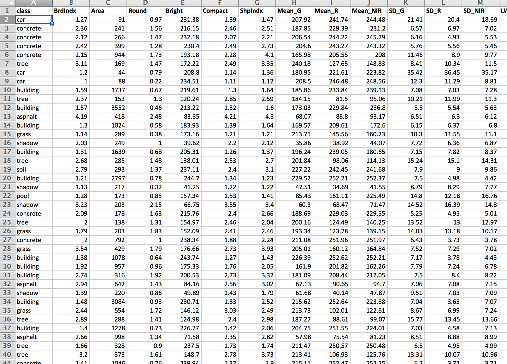
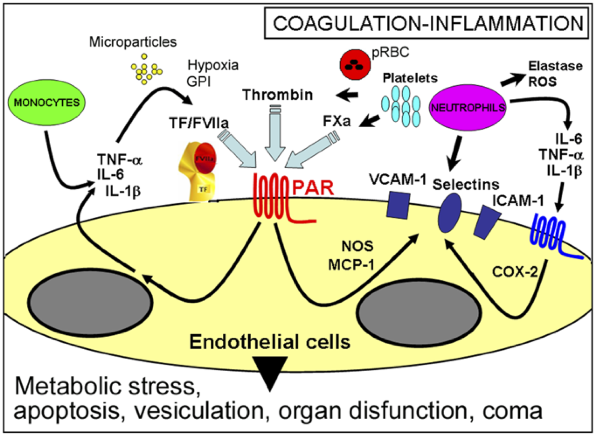
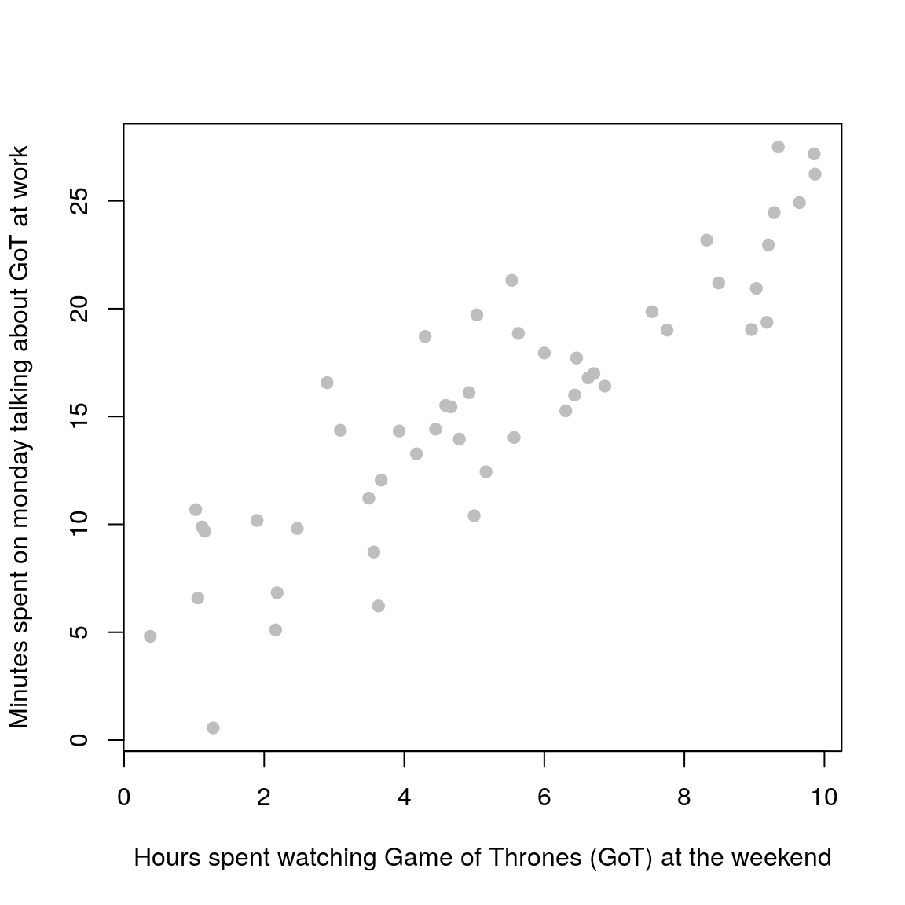
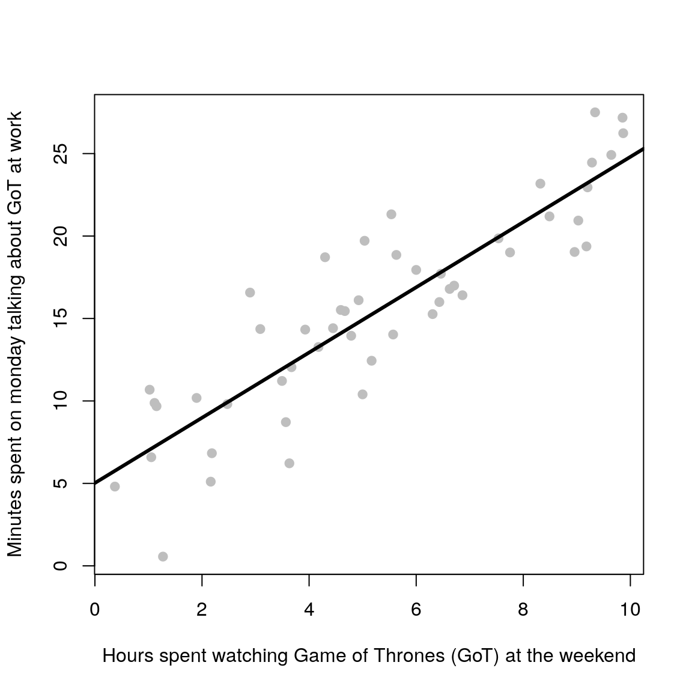
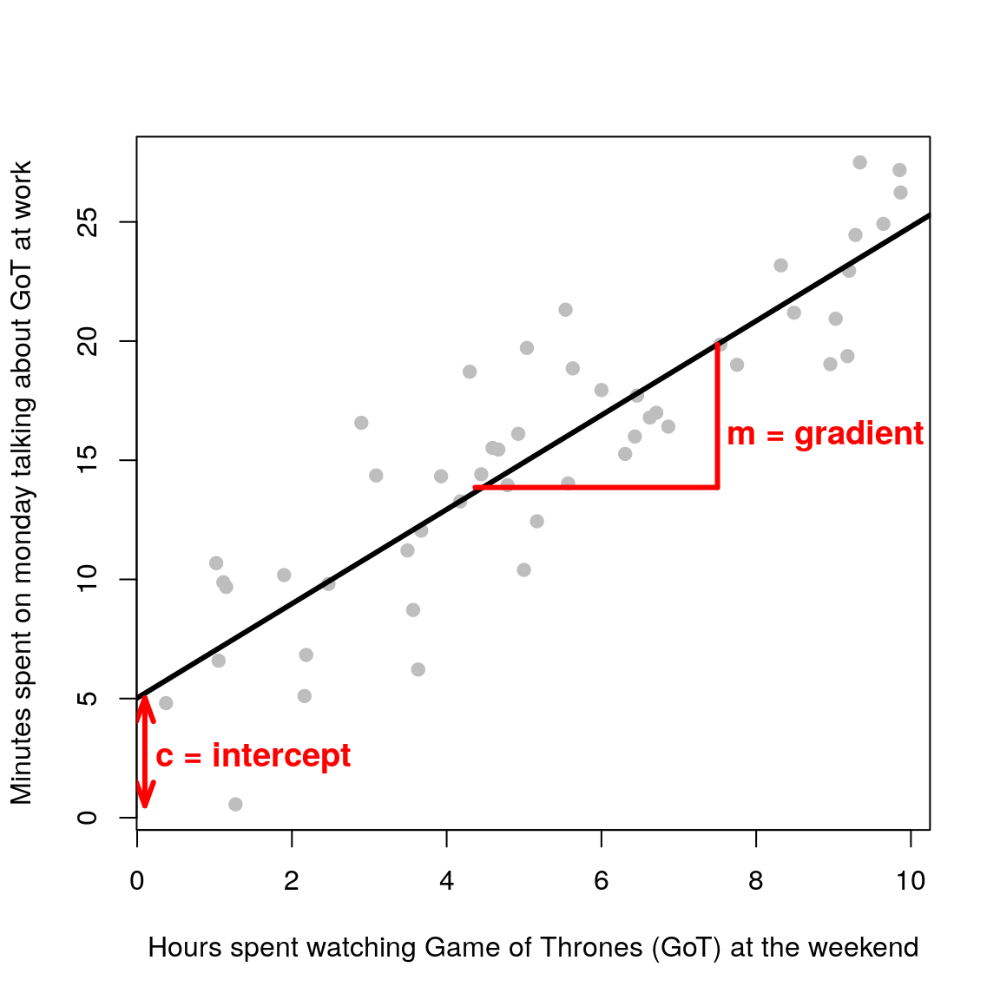
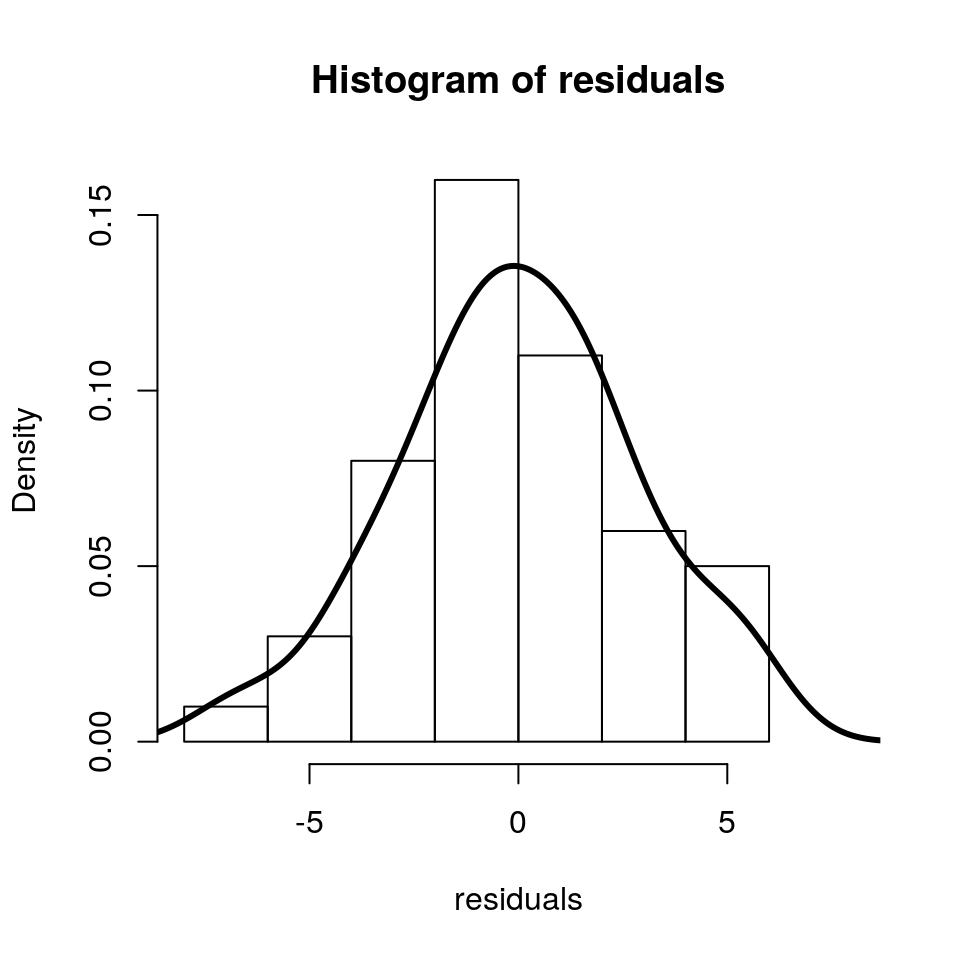

1 Introduction
1.1 Motivation
Scientists acquire knolwedge about the state of nature (the real-world) by collecting data. For example:

How do we make sense of all of these numbers and text? Visualising the data can give us important insights into the underlying structure of the data (covered in a previous workshop). The next step is to develop a model that captures the salient features/structure of the data.
1.2 What is a model?
A model is a human construct/abstraction that tries to approximate the data generating process in some useful manner.
Some people go even further:
Raw data, no matter how extensive, are useless without a model - Nate Silver
Models are built for various reasons:
- to enhance understanding of a complex phenomenon (e.g how does antibiotic resistance develop?);
- to execute “what if” scenarios (e.g what happens if interest rates go up?);
- to predict/forecast an outcome (e.g how many people will get influenza next winter?);
- to control a system (e.g autonomous vehicles).
Models come in all kinds of “languages”:
a physical model e.g medical training models
a verbal/pictorial model e.g Francischetti et al. Microcirculation (2008) 
a mathematical model \[ \begin{aligned} {\frac {\mathrm {d} x}{\mathrm {d} t}}& = \sigma (y-x),\\ {\frac {\mathrm {d} y}{\mathrm {d} t}}& = x(\rho -z)-y\\ {\frac {\mathrm {d} z}{\mathrm {d} t}}& = xy-\beta z \end{aligned} \]
Assumptions are an inherent part of every model; we cannot build models if we are not prepared to make assumptions. The feasibility of these assumptions is context-dependent but also on how the model will be used.
Remember that models do not represent the real-world, they are merely an “abridged” version of the real-world with many (many) caveats!!
All models are wrong but some are useful - George E.P. Box
For every complex question there is a simple and wrong solution - Albert Einstein
1.3 What is a statistical (stochastic) model?
A statistical model is a mathematical model that makes a set of statistical assumptions in the form of probability distributions (i.e we assume that some variables follow a pre-defined probability distribution).
In this workshop we will solely focus on linear models. In their simplest form these models can be used to fit “straight lines” (or hyperplanes; “straight lines” in higher dimensions) through data points. However, this modelling framework is much more general, and can model relationships between continuous and categorical variables, and can also be used to fit curved relationships. So it provides a much richer class of models than it first appears (though we will only focus on simple cases in this workshop.)
1.4 Illustrative example
Remember when you used to run simple lab experiments at school and plot data onto graph paper? It used to look something like this (with different axes labels of course):

Once you plotted out all of the data points, you were asked to grab a ruler (a rigid, straight object) and find the line of best fit. To do this, you used to try and get a roughly equal number of data points on each side of the line.

Congratulations! Unknowingly, you were fitting a statistical model to your measured data! Your best fit in that case was equivalent to performing ordinary least-squares which minimises the distance between the model (straight line) and your data points.
The fitted linear model is of the form \(y = mx + c\). Where \(m\) is the gradient and \(c\) is the intercept (\(x\) is the dependent variable and \(y\) the response variable i.e your measured data). At school you were inferring the parameters \(m\) and \(c\) by hand. In this workshop you will learn how to do it in R.

What are the statistical assumptions in this case? As we will see in the next chapter, in linear regression/modelling we assume that the residuals i.e the differences between the model (black line) and “reality” (observed data points), follow a normal/Gaussian distribution (a bell curve).

Model checking involves confirming that our statistical assumptions are sensible. We will delve into this in much detail later on, but just remember that when you hear people saying “check that your data is normal”, in the context of linear regression, what this means is that the residuals are normal (which also means that the response variable is normal).
1.5 Summary
- Models are useful abstractions of the data that can help us understand the underlying system.
- Linear regression is simply a flexible way to put a line-of-best-fit (or hyperplane) through the observed data points.
- Model checking is the process of verifying the statistical assumptions made.